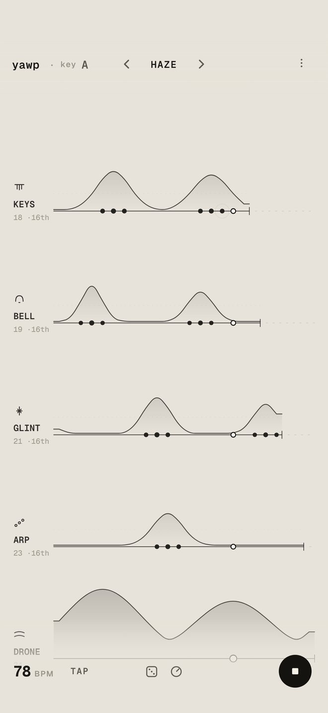
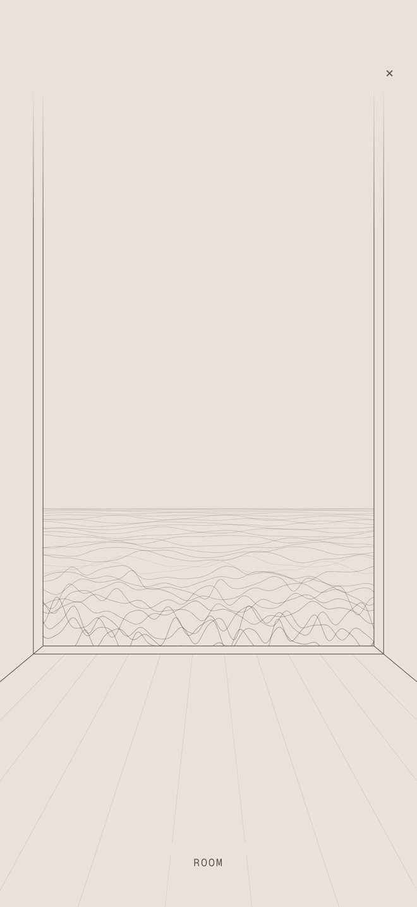
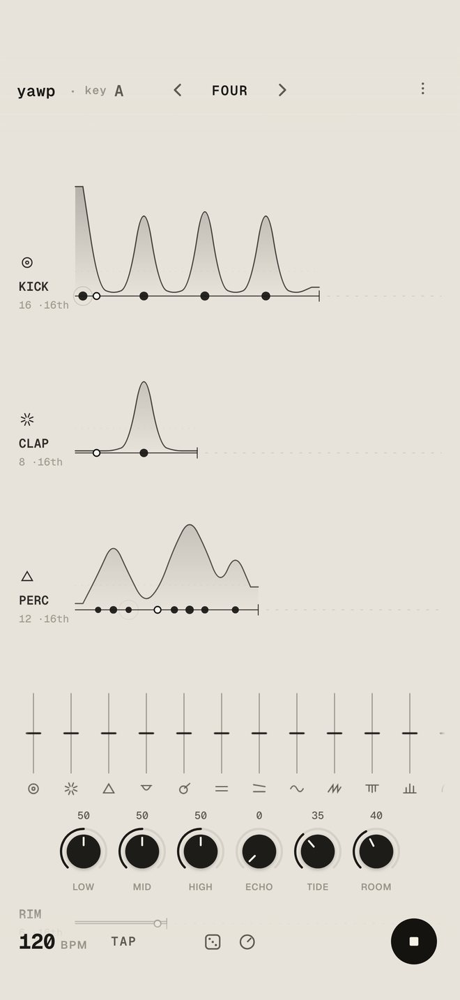
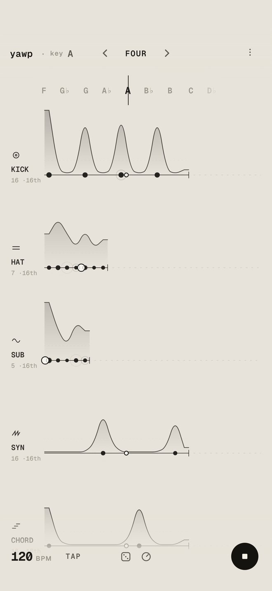
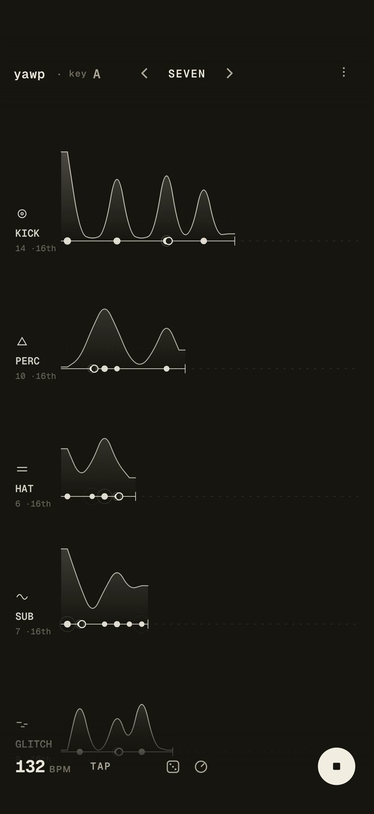
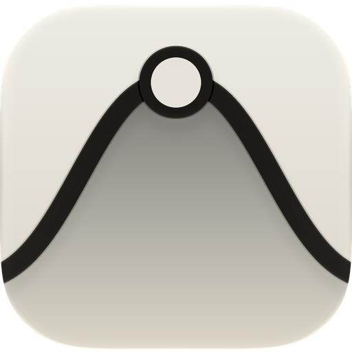

Draw a hill.
The notes follow.
丘を描く。
音がついてくる。
free to start · no ads · no data collected無料ではじめられる · 広告なし · データを集めない
yawp is an instrument made of loops. Draw a hill over a loop and the notes follow. Let loops of different lengths drift, and minimal techno and ambient happen. yawp は、ループでできた楽器です。ループの上に丘を描けば、音がついてくる。長さの違うループをずらしていけば、ミニマルテクノやアンビエントが生まれます。
On the App Store October 22 · iPhone and iPad10 月 22 日 App Store で公開 · iPhone・iPad
film
Watch yawp play.
One song, built by hand.yawp を弾いてみる。
一曲を、手で組み立てる。
01 · drift
Loops drift apart.
The drift is the music.ループが、ずれていく。
そのずれが、音楽になる。
Every voice is a loop of its own length. Unequal loops fall in and out of step, so the same few notes keep turning into something new. Four on the floor, odd meters and beatless ambient are one mechanism.音ごとに、ループの長さが違います。長さの違うループは拍が少しずつずれて、同じ数音がいつまでも新しく聞こえます。4 つ打ちも、変拍子も、拍のないアンビエントも、同じ仕組みです。

02 · watch
Watch the song
become line art.曲が、線画になって
動きだす。
Tap ◎ and the song plays as moving line art. Every scene moves with the loops: the sea through a tall window swells when they do.◎ を押すと、曲が動く線画になります。どの場面もループに合わせて動き、高い窓の向こうの海も、音と一緒にうねります。

03 · voices
Twenty-two voices.
Every one synthesized.22 の音。
すべて、その場で合成。
No samples ship with yawp. Every kick, hat, pad and bell is synthesized as it plays, tuned soft for minimal techno and ambient. The mixer gives each voice a fader; low, mid, high, echo, tide and room shape the whole.yawp には録音された音源が入っていません。キックもハットもパッドもベルも、鳴るたびにその場で合成し、ミニマルテクノとアンビエントに合うやわらかい音にしています。ミキサーでは音ごとのフェーダーと、low・mid・high・echo・tide・room で全体を整えます。

04 · key
Tune the whole song
like a string.曲全体を、
弦のように調律する。
Drag the tuner by the title and every pitched voice follows, live, a semitone at a time.タイトルの横のチューナーをドラッグすると、音程のある音がすべて、半音ずつその場でついてきます。

05 · night
Play into the night.
Same paper, inverted.夜も、弾ける。
同じ紙を、反転して。
Night mode turns the sheet over: pale ink on dark paper. Lock the screen and the music keeps going.夜のモードは、紙を裏返したような淡いインクと暗い紙。画面をロックしても、音楽は鳴りつづけます。

06 · hints
The whole grammar
fits on one sheet.操作のすべてが、
一枚に収まる。
there is no wrong way to draw a hill
07 · packs
Free to start.
Packs when you want more.無料ではじめて、
欲しくなったらパックを。
one-time purchases · never a subscription買い切り · 購読ではありません

yawp
loops that drift into musicずれていくループが、音楽になる
On the App Store October 22, 2026 · iPhone and iPad · iOS 15 or later2026 年 10 月 22 日 App Store で公開 · iPhone・iPad · iOS 15 以降